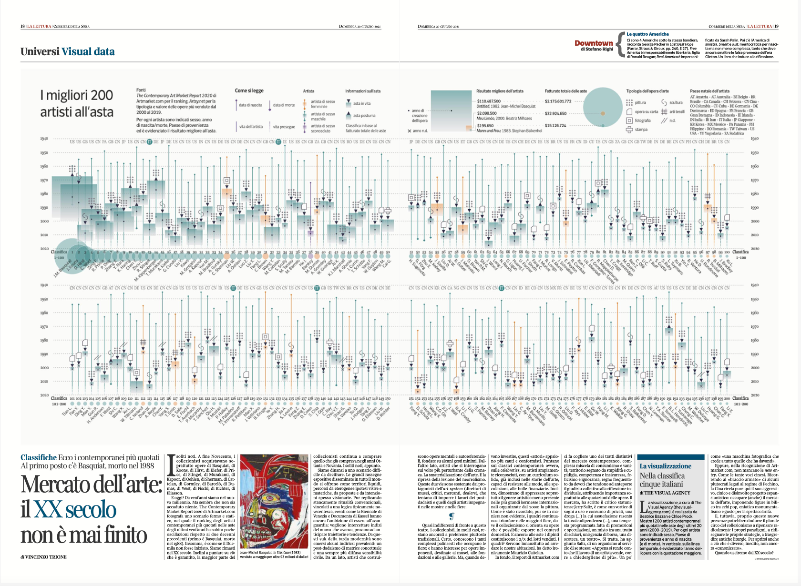

Infographic designed for La Lettura (Corriere della Sera) to showcase the top 200 contemporary artists in the last 20 years. Data sources: The Contemporary Art Market Report 2020 (for the artist ranking) and ArtMarket.com (for the artist classification). Myself and my partner Beatrice Bazzan (@TheVisualAgency) conducted the research, data analysis, and design for this glyph-based data visualization. Published on Sunday June 20th 2021.
